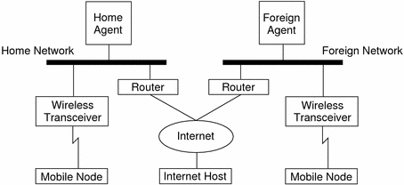
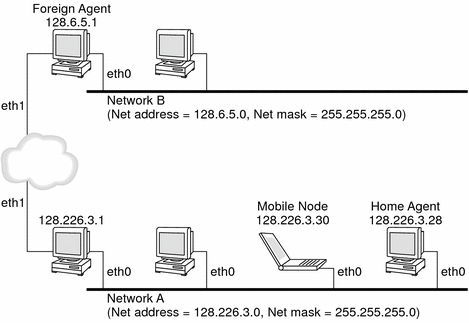
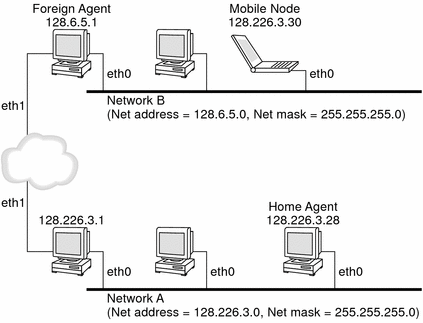

Previous
Previous
Mobile IP (Overview)
Mobile Internet Protocol (IP) enables the transfer of information between mobile computers. Mobile computers include lap tops and wireless communications. The mobile computer can change its location to a foreign network. At the foreign network, the mobile computer can still communicate through the home network of the mobile computer. The Solaris implementation of Mobile IP supports only IPv4.
This chapter contains the following information:
For Mobile IP-related tasks, refer to Chapter 28, Administering Mobile IP (Tasks). For Mobile IP reference materials, refer to Chapter 29, Mobile IP Files and Commands (Reference).
Introduction to Mobile IP
Current versions of the Internet Protocol (IP) assume that the point at which a computer attaches to the Internet or a network is fixed. IP also assumes that the IP address of the computer identifies the network to which the computer is attached. Datagrams that are sent to a computer are based on the location information that is contained in the IP address. Many Internet Protocols require that a node's IP address remain unchanged. If any of these protocols are active on a Mobile IP computing device, their applications fail. Even HTTP would fail if not for the short-lived nature of its TCP connections. Updating an IP address and refreshing the web page is not a burden.
If a mobile computer, or mobile node, moves to a new network while its IP address is unchanged, the mobile node address does not reflect the new point of attachment. Consequently, routing protocols that exist cannot route datagrams to the mobile node correctly. You must reconfigure the mobile node with a different IP address that represents the new location. Assigning a different IP address is cumbersome. Thus, under the current Internet Protocol, if the mobile node moves without changing its address, it loses routing. If the mobile node does change its address, it loses connections.
Mobile IP solves this problem by allowing the mobile node to use two IP addresses. The first address is a fixed home address. The second address is a care-of address that changes at each new point of attachment. Mobile IP enables a computer to roam freely on the Internet. Mobile IP also enables a computer to roam freely on an organization's network while still maintaining the same home address. Consequently, communication activities are not disrupted when the user changes the computer's point of attachment. Instead, the network is updated with the new location of the mobile node. See the Glossary for definitions of terms that are associated with Mobile IP.
The following figure illustrates the general Mobile IP topology.
Figure 27-1 Mobile IP Topology
By using this figure's Mobile IP topology, the following scenario shows how a datagram moves from one point to another point within the Mobile IP framework:
The Internet host sends a datagram to the mobile node by using the mobile node's home address (normal IP routing process).
If the mobile node is on its home network, the datagram is delivered through the normal IP process to the mobile node. Otherwise, the home agent receives the datagram.
If the mobile node is on a foreign network, the home agent forwards the datagram to the foreign agent. The home agent must encapsulate the datagram in an outer datagram so that the foreign agent's IP address appears in the outer IP header.
The foreign agent delivers the datagram to the mobile node.
Datagrams from the mobile node to the Internet host are sent by using normal IP routing procedures. If the mobile node is on a foreign network, the packets are delivered to the foreign agent. The foreign agent forwards the datagram to the Internet host.
In situations with ingress filtering present, the source address must be topologically correct for the subnet that the datagram is coming from, or a router cannot forward the datagram. If this scenario exists on links between the mobile node and the correspondent node, the foreign agent needs to provide reverse tunneling support. Then, the foreign agent can deliver every datagram that the mobile node sends to its home agent. The home agent then forwards the datagram through the path that the datagram would have taken had the mobile node resided on the home network. This process guarantees that the source address is correct for all links that the datagram must traverse.
Regarding wireless communications, Figure 27-1 depicts the use of wireless transceivers to transmit the datagrams to the mobile node. Also, all datagrams between the Internet host and the mobile node use the home address of the mobile node. The home address is used even when the mobile node is located on the foreign network. The care-of address is used only for communication with mobility agents. The care-of address is invisible to the Internet host.
Mobile IP Functional Entities
Mobile IP introduces the following new functional entities:
Mobile node (MN) - Host or router that changes its point of attachment from one network to another network while maintaining all existing communications by using its IP home address.
Home agent (HA) - Router or server on the home network of a mobile node. The router intercepts datagrams that are destined for the mobile node. The router then delivers the datagrams through the care-of address. The home agent also maintains current information on the location of the mobile node.
Foreign agent (FA) - Router or server on the foreign network that the mobile node visits. Provides host routing services to the mobile node. The foreign agent might also provide a care-of address to the mobile node while the mobile node is registered.
How Mobile IP Works
Mobile IP enables routing of IP datagrams to mobile nodes. The home address of the mobile node always identifies the mobile node regardless of where the mobile node is attached. When away from home, a care-of address is associated with the mobile node's home address. The care-of address provides information about the current point of attachment of the mobile node. Mobile IP uses a registration mechanism to register the care-of address with a home agent.
The home agent redirects datagrams from the home network to the care-of address. The home agent constructs a new IP header that contains the care-of address of the mobile node as the destination IP address. This new header encapsulates the original IP datagram. Consequently, the home address of the mobile node has no effect on the routing of the encapsulated datagram until the datagram arrives at the care-of address. This type of encapsulation is called tunneling. After the datagram arrives at the care-of address, the datagram is de-encapsulated. Then the datagram is delivered to the mobile node.
The following figure shows a mobile node that resides on its home network, Network A, before the mobile node moves to a foreign network, Network B. Both networks support Mobile IP. The mobile node is always associated with the home address of the mobile node, 128.226.3.30.
Figure 27-2 Mobile Node Residing on Home Network
The following figure shows a mobile node that has moved to a foreign network, Network B. Datagrams that are destined for the mobile node are intercepted by the home agent on the home network, Network A. The datagrams are encapsulated. Then, the datagrams are sent to the foreign agent on Network B. The foreign agent strips off the outer header. Then the foreign agent delivers the datagram to the mobile node that is located on Network B.
Figure 27-3 Mobile Node Moving to a Foreign Network
The care-of address might belong to a foreign agent. The care-of address might be acquired by the mobile node through the Dynamic Host Configuration Protocol (DHCP) or the Point-to-Point Protocol (PPP). In the latter situation, a mobile node has a colocated care-of address.
Mobility agents (home agents and foreign agents) advertise their presence by using agent advertisement messages. Optionally, a mobile node can solicit an agent advertisement message. The mobile node uses any mobility agent that is attached locally through an agent solicitation message. A mobile node uses the agent advertisements to determine whether the mobile node is on the home network or a foreign network.
The mobile node uses a special registration process to inform the home agent about the current location of the mobile node. The mobile node is always "listening" for mobility agents advertising their presence. The mobile node uses these advertisements to help determine when the mobile node moves to another subnet. When a mobile node determines that the mobile node has moved its location, the mobile node uses the new foreign agent to forward a registration message to the home agent. The mobile node uses the same process when the mobile node moves from one foreign network to another foreign network.
When the mobile node detects that it is located on the home network, the mobile node does not use mobility services. When the mobile node returns to the home network, the mobile node deregisters with the home agent.
Agent Discovery
A mobile node uses a method that is known as agent discovery to determine the following information:
When the node has moved from one network to another network
Whether the network is the home network or a foreign network
The foreign agent care-of address that is offered by each foreign agent on that network
Mobility services that are provided by the mobility agent, advertised as flags, and additional extensions in the agent advertisement
Mobility agents transmit agent advertisements to advertise services on a network. In the absence of agent advertisements, a mobile node can solicit advertisements. This capability is known as agent solicitation. If a mobile node is capable of supporting its own colocated care-of address, the mobile node can use regular router advertisements for the same purposes.